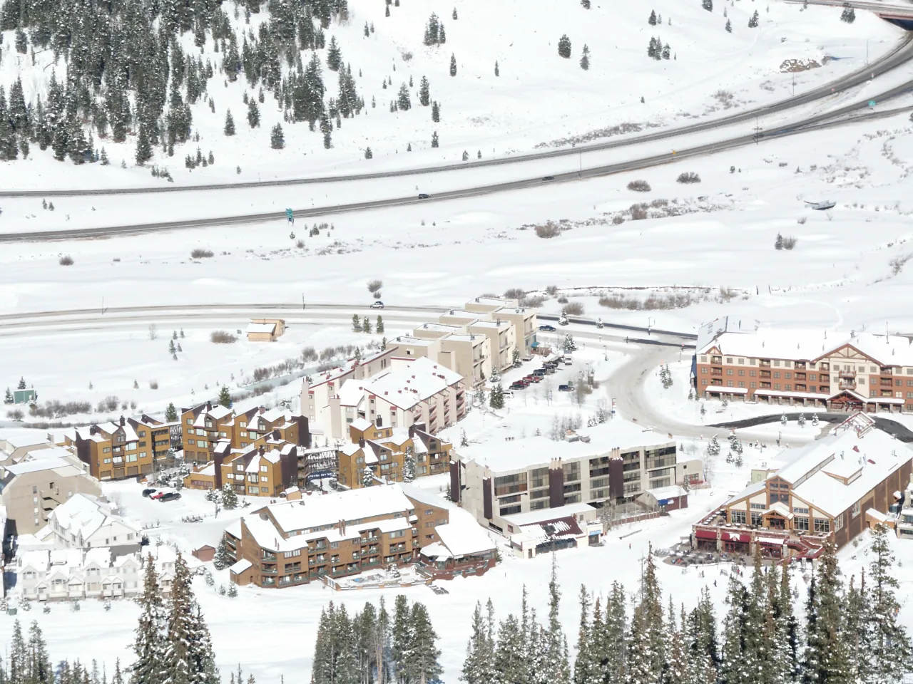

Copper Mountain, Colorado · Ski conditions
Copper Mountain Conditions and Webcams Today
Copper's webcams and kid facts: group lessons from age 3, kids 4 and under ski free, free Alpine and Far East lots. Off I-70 at exit 195 west of Denver.
Researched with AI (Miles Rowan) · sources linked and dated · How we check
Copper Mountain's own status
Copper's events page lists opening day as Sunday, Nov 8, 2026. Not all lifts open at once; check its trail report for today's lifts (read Nov 17). Updates: Copper lift hours.
Our webcam read
No cam read from us yet. Cam reads show here only when a recent one has passed a separate automated accuracy check.

Plan the day with kids
- Season and hours: Copper's events page lists opening day as Sunday, November 8, 2026. Its winter lift hours (no year shown): base lifts 9am to 4pm; other named lifts close between 2:30 and 3:30pm. No closing date posted.
- Lessons: Full-day kids' group lessons for ages 3 to 5 and 6 to 17, 9:30am to 3pm (pickup at 1pm optional). Ages 3 to 5 must be potty trained; the 6 to 17 list says helmet required.
- Lesson morning: Arrive 1 hour early if renting, 30 minutes if not. Meet at Copper Sports in Center Village (Nov 21 to Dec 3), then the Schoolhouse in West Village (Dec 4 to Apr 4; no year shown).
- Lift tickets: Copper's ticket page shows no day-ticket price. Kids 4 and under ski free; buy at least 1 day ahead for the online price. Tickets are non-refundable.
- Childcare: Copper's Mountain Sprouts Academy page is aimed at local employees and residents and posts no ages, hours or prices. We found no guest daycare on the pages we read.
- Tubing: The tubing hill in East Village is "closed until conditions allow opening for Winter 26/27" (Nov 17). 1-hour sessions, booked online ahead; riders must be 36 inches tall, one per tube.
Lesson and learning-area prices on Copper Mountain's pages, read Nov 17:
- Kids' group lesson, full day, booked 7+ days ahead: $364.65
- Kids' group lesson, full day, walk-up: $429 (booked within 7 days; walk-up space not guaranteed, Copper says)
- Lift ticket added to a 6 to 17 lesson: $50 more
- Green Acres learning area ticket (that area only): $55 (unit not stated)
- Snowstang bus from Denver, adult round trip: From $25; ages 2 to 11 ride free with a full-fare adult
Lesson prices are Copper's full-day youth group lesson table and include tax; the page doesn't say "per child". Ages 3 to 5 include a lift ticket, lunch and snacks; ages 6 to 17 include lunch and snacks, with the lift ticket extra. No season year is printed beside the lesson dates. Read Nov 17, 2026.
Lift tickets and lessons: Copper's pages we read show lesson prices but no day lift ticket price for adults or kids 5 and up, so we can't sum a family-of-4 day; check live. See Copper lift tickets.
From Copper 26/27 opening day, Copper lift tickets, Copper parking, Copper youth group lessons, Copper Mountain Sprouts Academy, Copper getting here and Copper lift hours, read Nov 17.
Getting there from Denver
- Car: from Denver or Denver's airport (Peña Boulevard), I-70 west to exit 195. Copper posts no miles or drive time; it points to GOI70.com for I-70 travel forecasts.
- Parking: the Alpine and Far East lots are free 7 days a week in winter. Ten Mile, Chapel, Beeler and Union Creek are paid but free after 2pm; Wheeler is paid. Copper posts no paid-lot rates.
- Buses: the winter Snowstang bus runs from Denver Union Station or the Denver Federal Center (fare in the price list). Summit Express runs daily shuttles from Denver's airport; no fares posted.
If the snow is thin
- Kids' lessons: a 10% fee to cancel any time after booking, and no refund within 24 hours of the start. No weather policy posted.
- Lift tickets are 100% non-refundable and non-transferable, Copper says. Tubing: 10% cancel fee, no refund within 24 hours or for missed sessions.
From Copper youth group lessons and Copper lift tickets and Copper tubing hill, read Nov 17.
Cam by cam
The 6 Copper cam views our reader uses, in our own descriptive words (see Copper Mountain's own cam page, as listed in our cam feed Nov 17): Snow stake, Summit ridge, Race hill finish, Base lift area, Summit lift top, Trail with lift line. Once our reads start, each cam's last read time shows here.
How we read the cams: a program looks at Copper Mountain's public webcam pictures and notes only what a picture can show: fresh snow, snow cover, snowmaking, moving lifts, how busy the base looks, visibility and the snow stake. Each read shows its time; after 90 minutes it is marked older, after 6 hours it is hidden. We never say whether terrain is safe, icy, groomed or open; Copper Mountain's own report decides that. We don't show the cam pictures or count people.
Sources: Copper webcams · Copper lift hours · Copper youth group lessons · Copper Mountain Sprouts Academy · Copper getting here · Copper 26/27 opening day · Copper lift tickets · Copper tubing hill · Copper parking (read Nov 17). We haven't skied Copper Mountain.